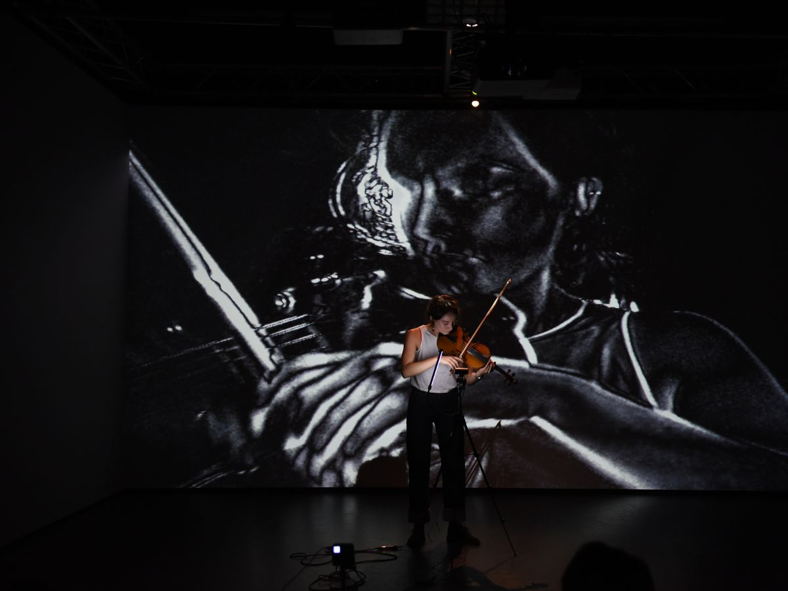

Christina Karpodini

Music for Dance Performance and Theatrical Plays
2024-2023 - Where We Meet
2023-2022 Discordance
2021 - Remote Intimacy
2020 - Strings
2020 - Results May Vary
2015 - Tavli Dimitris Kechaidis - Sound Design for Theatre - for director Eva Kotanidis
2014 - Peri Fyseos Michalis Varvidakis - Sound Design for Theatre - for director Efh Theodorou
2014 - Loula Anagnostakis Mixage - Sound Design for Theatre - for director Manos Karatzogiannis
Electroacoustic Compositions
2021 - "She" (Αυτή)
2020 - Sonically Touchable
2020 - "Οικολογία"(ecology)
2019 - Reflections
2016 - Paradise Lost - Surround Tape Music, Acousmatic
2016 - Zero
2016 - Soundscape Kitchen
2015 - Dinner Fantasia - for two dinner sets and live electronics, Live Performance
2015 - Autumn Paces
2015 - Plane
2015 - Etude aux Music Concret - Surround Tape Music, Acousmatic, Miniature
2015 - Soundscape of Foiniki - Tape Music, Soundscape
2014 - Plato on the story of Atlantis
2013 - Theofilos Palaiologos, CP Cavafis Soundmix
2013 - The Horses of Achilles, CP Cavafis Soundmix
Compositions for Children's Choir
2013 - A Song for Hope:
Composition for Children's Choir 2013 Conservatory of Music "M.Tsesmeli" Athens, Greece Composition: Christina Karpodini Instrumentation & Orchestration: Christina Karpodini, Lyrics: Georgia Psarra
2011 - The Dance Of The Clocks:
Composition for Children's Choir 2011 Conservatory of Music "M.Tsesmeli" Athens, Greece Composition: Christina Karpodini Instrumentation & Orchestration: Christina Karpodini, Lyrics: Elpida Kuriakidou